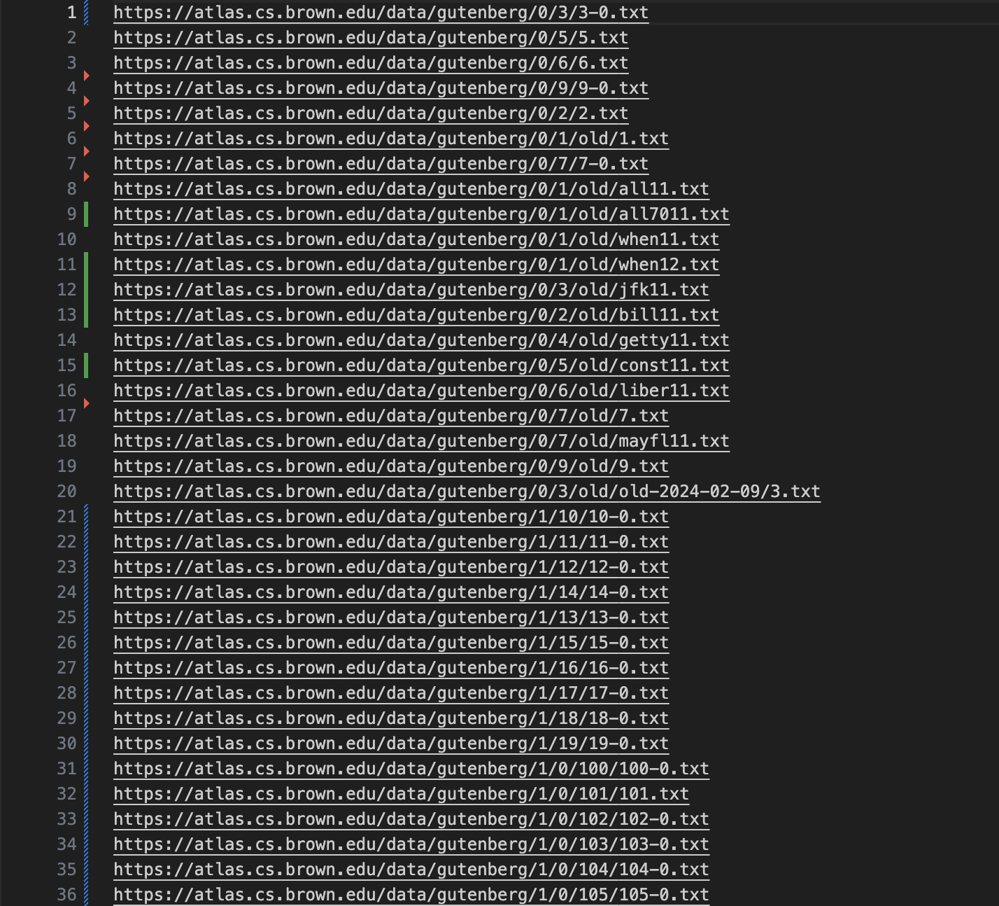
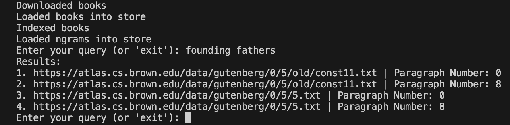
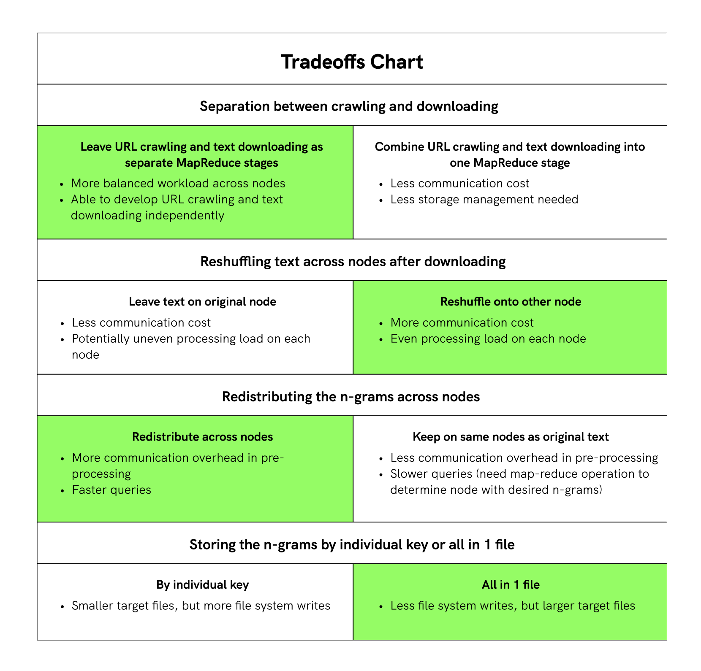

In this project, I, along with 4 groupmates, created a distributed by-paragraph search engine for occurrences of words or phrases in a set of books (the Gutenberg dataset) in JavaScript and deployed it on AWS. I mainly worked on the distributed URL crawling section of the pipeline, but I also contributed to the implementation of the distributed text downloading and indexing section as well.
When learning a new language, it is often helpful to see uses of words and phrases in context, especially within books. Therefore, we decided to create a search engine that, given a queried sentence, will return the URLs of books and paragraph numbers where words in that sentence are found. This allows users to immediately find the exact context where their search phrase appears, but also gives them enough surrounding text to infer meaning and semantics.
To crawl all of the URLs in the file, a user can run node urls.js in the command line and get the results as shown below:
The user can then download the text and make repeated queries as shown below:
Before a user makes a query, the following steps occur:
All of the above steps occur only once, and they are all implemented using the MapReduce abstraction, which is also implemented by our group. We decided to implement these steps with MapReduce because the Gutenberg dataset was a very large dataset and scaling out the calculations to many nodes would benefit greatly for performance.
Lastly, for our query, we divide up the queried sentence into 1 and 2 grams. We determine the nodes that contain the n-grams using consistent hashing, and then we collate and return the results.
There were several tradeoffs that we had to consider during the design process, with our final choices labeled in green:
When discussing these tradeoffs, in general, we decided to sacrifice pre-processing communication cost and memory use for faster querying and even load distribution amongst the nodes in pre-processing. An even distribution load will allow the pipeline operations to be properly parallelized, and fast querying speed is important because it can be repeated an unlimited amount of times.
This project was quite difficult, as we ran into many issues regarding asynchronous operations in JavaScript, and we were also unable to deploy our search pipeline on the entirety of the Gutenberg dataset due to limited memory storage on the t2.micro EC2 instances. However, being able to witness a significant increase in performance compared to the non-distributed implementation was very satisfying, and I found it very enriching to bounce design ideas off of other peers. Overall, I am very proud of how this project turned out, and it gave me a much better understanding of distributed systems as well!